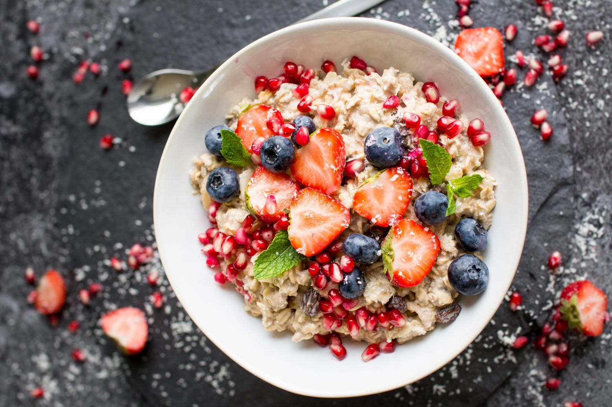
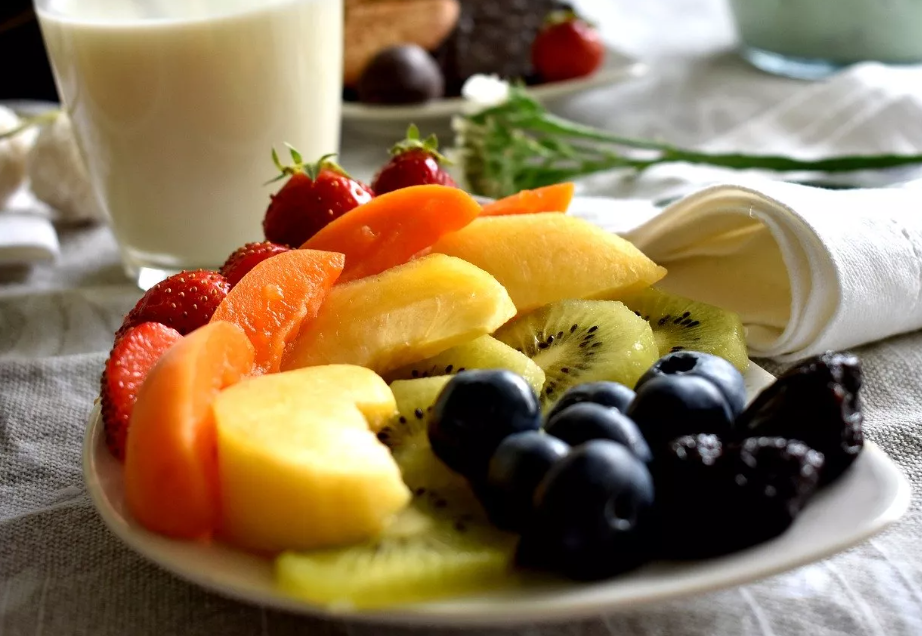
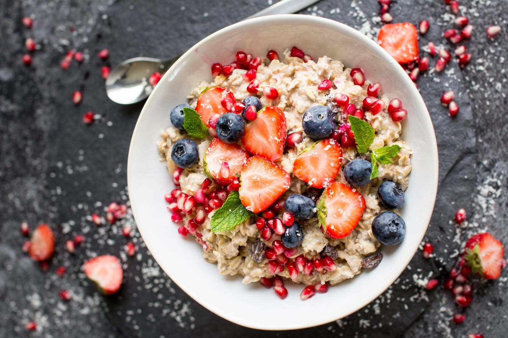
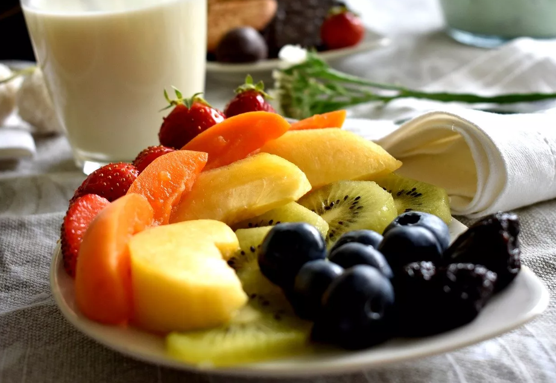
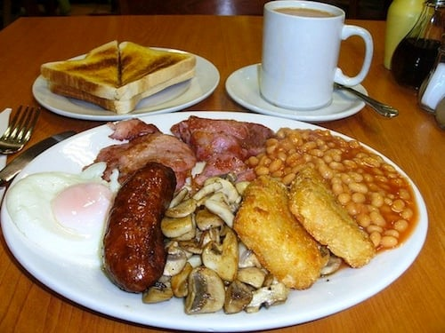
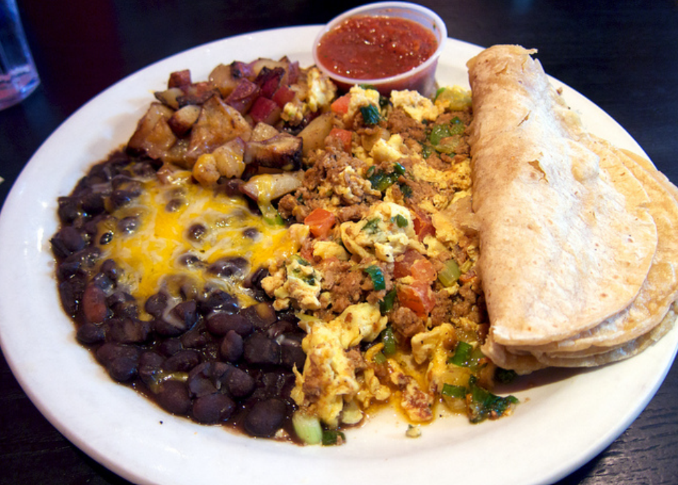
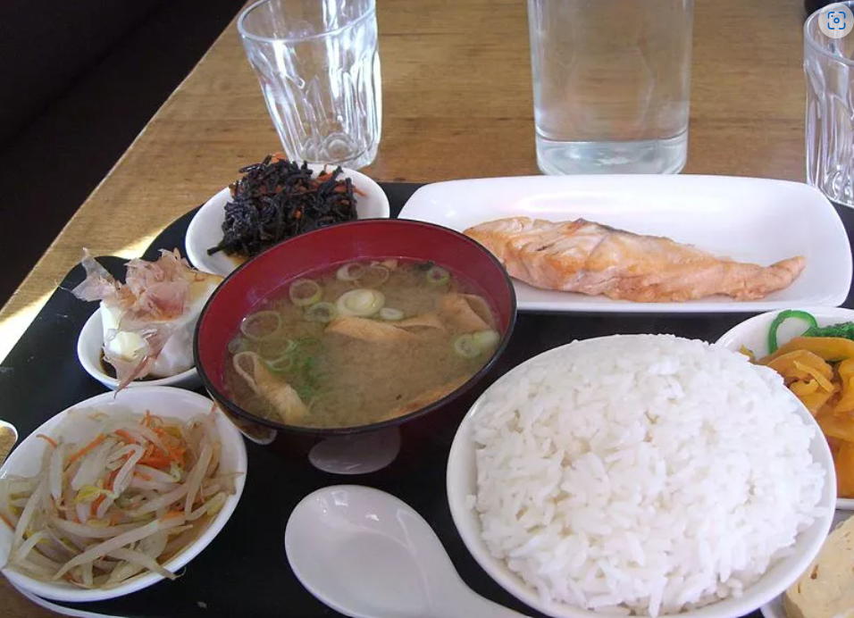
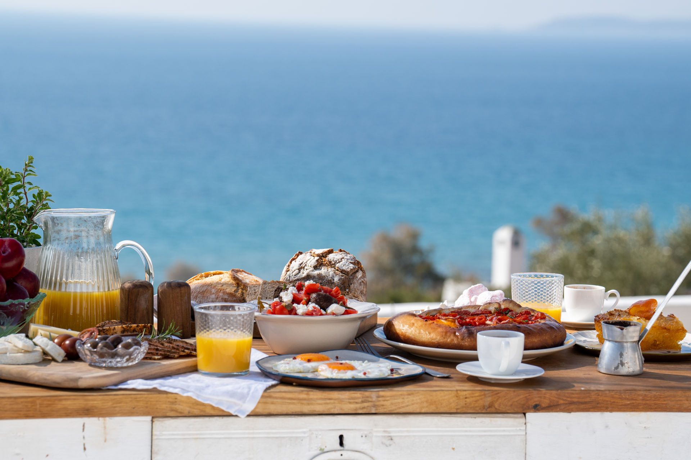
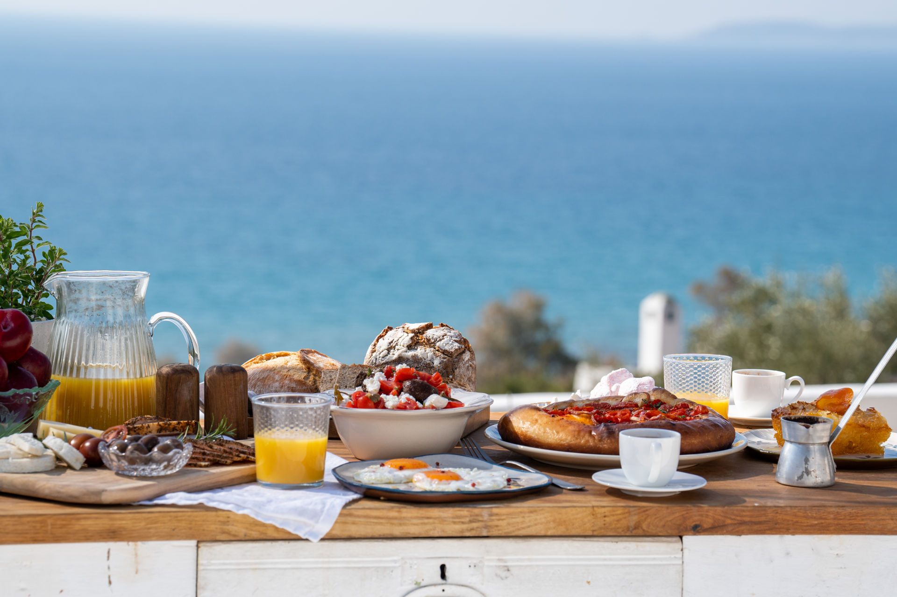

Colazioni dolci
 



Italia
La più classica delle colazioni consiste in una bevanda calda, caffè, tè, oppure cappuccino - accompagnata da una brioche oppure dei biscotti.
Svizzera
Molto comune è la tradizionale birchermüesli, una miscela di avena con frutta e noci in stile muesli che di solito viene servita su yogurt denso.
Hawaii
Al mattino si mangia tra ananas, cocco, mango e papaya. Immancabile un bel caffè americano con panna e delle piccole ciambelline zuccherate.
Colazioni salate
  Inghilterra
La tipica english breakfast comprende uova, salsiccia, pancetta tagliata spessa, fagioli, funghi, pane tostato, porridge, pomodori cotti e una tazza di tè.
Messico
La colazione messicana è all’insegna del piccante con chilaquiles ricoperte da pomodoro, formaggio fuso e coriandolo e punte di vitello.
Giappone
La colazione tradizionale in Giappone consiste in zuppa di miso, riso bianco al vapore, verdure sottaceto, pesce o tofu, il tutto accompagnato dal tè verde.
Colazioni miste

 

Stati Uniti
La colazione americana mette insieme uova, bacon, cereali, donuts e muffin, il tutto accompagnato da caffè americano, centrifugati o succhi di frutta.
Spagna
La colazione consiste in genere in café con leche, cibi dolci (churros fritti, magdalenas, torrijas) oppure cibi salati, come il tostada con tomate, ovvero un toast al pomodoro (o al prosciutto).
Grecia
La colazione diffusa in Grecia include uova sode, salumi e pane con feta, ma anche il tradizionale yogurt greco denso, ricco e cremoso, solitamente servito con noci e miele.